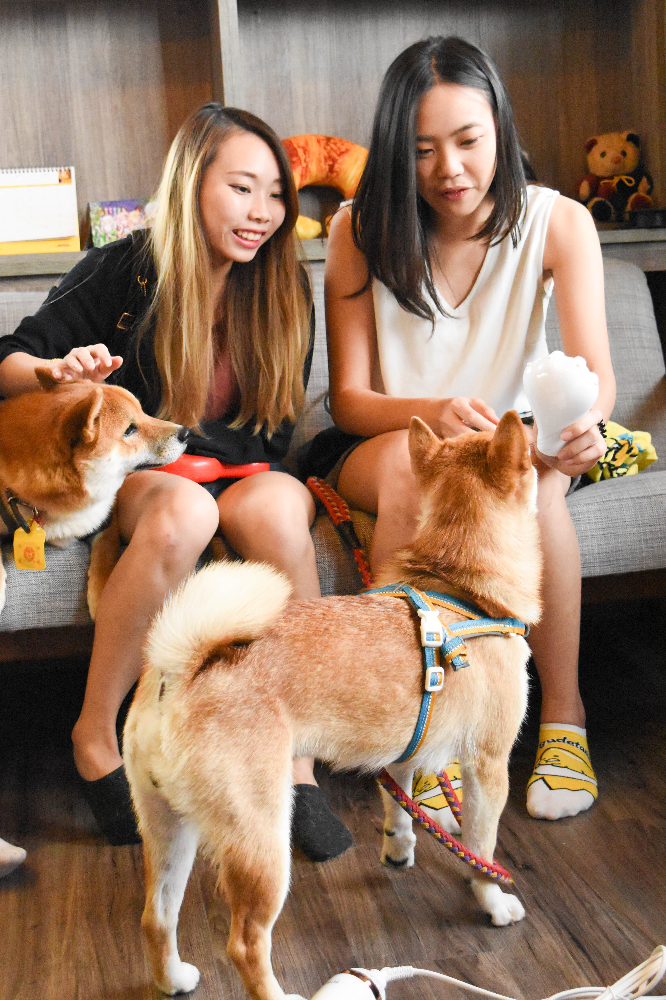
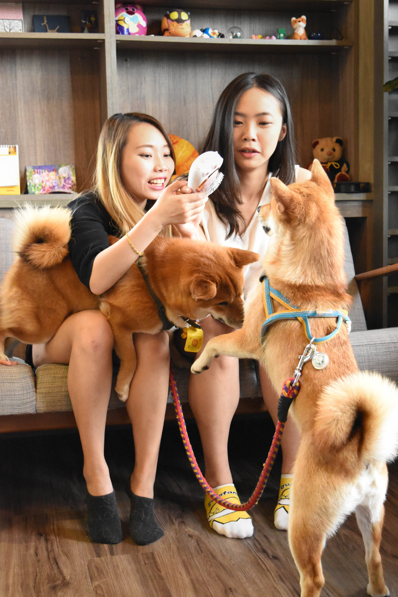
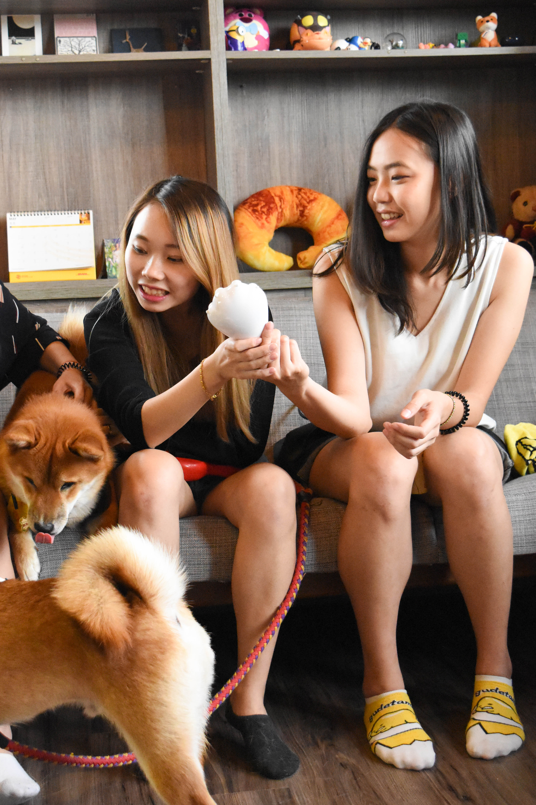
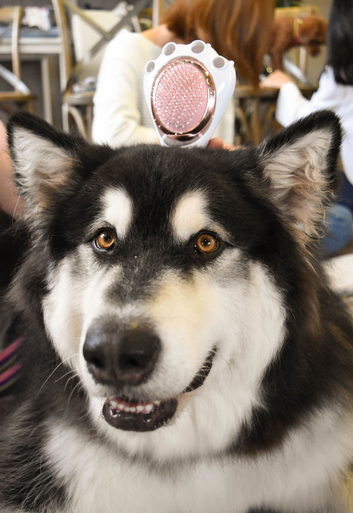
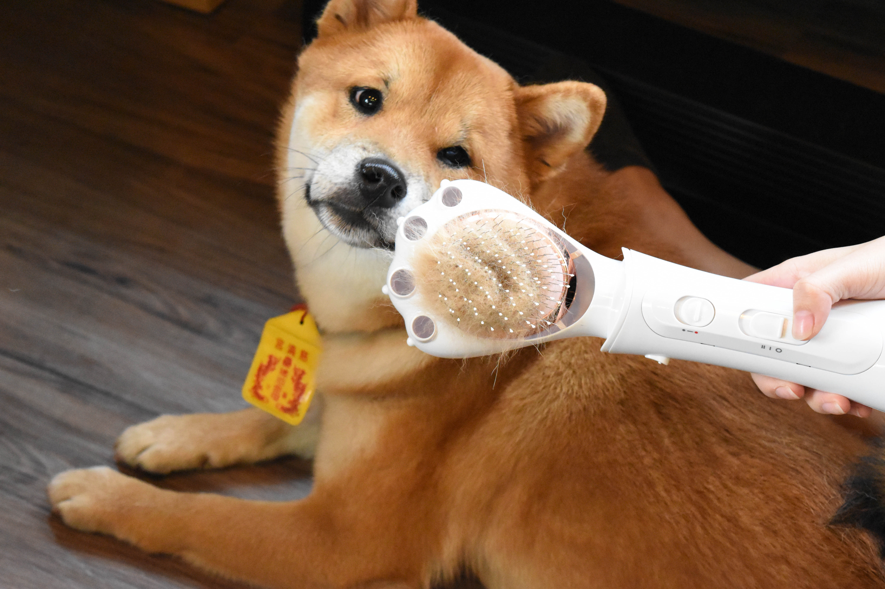

2-in-1 Grooming
Dry, brush and massage in one easy motion for a faster, calmer routine.
Pet Care & Photo Journal
A pet-specific grooming dryer that makes post-bath care faster and more comfortable for your furry friend.
The Petaum Grooming Dryer is a combination of a dryer and a brush specially designed for pets. It dries fur gently, removes loose hair, and massages your pet while grooming.

Carefully crafted to make grooming a more pleasant experience for pets and owners alike.
Dry, brush and massage in one easy motion for a faster, calmer routine.
Soft airflow and soothing brush bristles keep grooming gentle and stress-free.
Compact, lightweight, and perfect for cats as well as small to medium dogs.
Enjoy moments of calm grooming and happy pets captured with Petaum.



